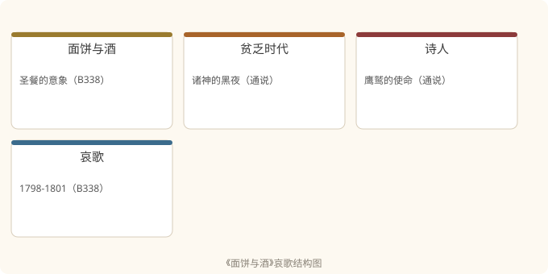

面饼与酒
一、基本信息
| 作者 | 弗里德里希·荷尔德林 |
|---|---|
| 成书/出版 | 1798-1801年（Britannica B338：Brod und Wein——1798-1801哀歌） Friedrich Holderlin — Encyclopaedia Britannica（百科全书） |
| 国别/地区 | 德国 |
| 时代 | 近代 · 19世纪初 |
| 体裁 | 哀歌 |
| 语言 | 德语 |

《面饼与酒》哀歌结构图（主题·结构图）
二、创作背景
Britannica（B338）：Brod und Wein——1798-1801年哀歌（与'Menons Klagen um Diotima'并列）。
Britannica（B338）：'a prophet of spiritual renewal, of "the return of the gods"'——哀歌体。
Britannica（B338）：'especially admired for his uniquely expressive style'。
三、内容脉络
（通说待核——B338未载细节）'面包是大地之果，酒是大地之果'（通说待核——不采为引文）的圣餐意象。
（通说待核）'贫乏时代'诗人何为的追问。
四、主要人物表
| 人物 | 身份 | 说明 |
|---|---|---|
| 抒情'我' | 哀歌者 | （通说待核） |
五、主题与艺术特点
- '诸神的黑夜'与'贫乏时代'（通说待核）。
- 圣餐意象：面饼与酒（B338 书名）。
- '诗人如鹰鹫'的使命（通说待核）。
六、影响与评论
- Britannica：Brod und Wein——1798-1801哀歌（B338）。
Friedrich Holderlin — Encyclopaedia Britannica（百科全书） - Britannica：'uniquely expressive style'（B338 作者级）。
Friedrich Holderlin — Encyclopaedia Britannica（百科全书）
七、阅读建议
难点
- 哀歌体（elegiac couplets——通说待核）。
- 荷尔德林的希腊崇拜。
- 《面饼与酒》中译本（人民文学等——通说待核）。
- 德文原版（公有领域）。
荷尔德林诗歌首选；与《许珀里翁》对读。
八、待核实
- 篇内结构（九节说）核对（通说）。
- '贫乏时代'说法出处待核。
- 与《许珀里翁·狄奥蒂玛》哀歌的关系待核。